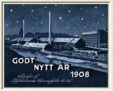
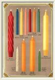
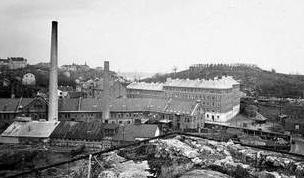
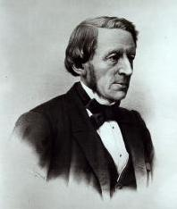
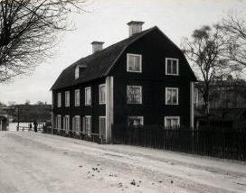
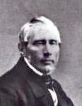
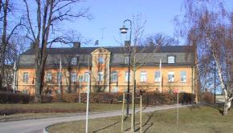
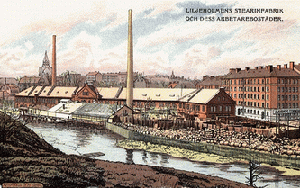
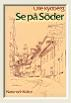

|
|
|

|

|
Karta 1733
Karta 1836
Karta 1885
Karta 1902
Karta 1922
Karta 2000
Ur Stockholmsliv, Staffan Tjerneld, 1950
|

 Danviksgatan 10, 11-15. Liljeholmens Stearinfabrik, arbetarbostäder, Fåfängan. Bilden tagen tidigast 1900 från Danviksklippan. Danviksgatan 10, 11-15. Liljeholmens Stearinfabrik, arbetarbostäder, Fåfängan. Bilden tagen tidigast 1900 från Danviksklippan.
|
|
Industrialiseringsvågen vid mitten av 1800-talet försåg Stockholm med många
fabriksanläggningar, men nu har praktiskt taget alla dessa företag lämnat sina ursprungliga tomter
som antingen blivit för trånga eller dyrbara. En industri som emellertid stannat och som med stor
pietet vårdar sina traditioner är Liljeholmens stearinfabrik. Många stockholmare har nog inga klara
begrepp om anläggningarna eftersom dessa är dolda bakom tegellängorna vid Danviksgatan, men ett
besök innanför murarna är givande. Bland annat hittar man mitt bland äldre fabriksbyggnader och
intill ett nytt laboratoriehus en 1700-talsherrgård av välkänt Stockholmssnitt, nu som för hundra år
sedan residens för fabrikens ledare.
|
|
Företagets grundare var Lars Johan Hierta, i vår tid ofta uppfattad som »den svenska pressens fader».
Att Hierta också var en lika uppslagsrik som framgångsrik affärsman är mindre känt bland vanligt
folk. Ja, hans affärssinne var så utvecklat, att många av hans samtida ansåg att Hiertas strid för
friheten i inte ringa grad gällde friheten att göra lönande affärer. »Grosshandlare, fabrikör,
brukspatron och fastighetsägare» kallas Hierta i en biografi och hans affärsregister var onekligen rikt;
han hade eget tryckeri som tryckte succétidningen Aftonbladet, han hade bokförlag som gav ut
utländska romaner i översättning till billigt pris, han hade ett stilgjuteri, han satsade kapital i
utdikningen av Gotlands myrar, i det nya gasverket och var en redare som intresserade sig både för
skepp på Indien och Kina och för de nya ångfärjorna på Strömmen. Han konfronterades 1837 i
London med det nyuppfunna stearinljuset och började fundera över om inte detta
var något att lansera på hemmamarknaden.
|
|

Lars Johan Hjerta
|
|

Huset i Liljeholmen, där stearinfabriken startade 1839
|
|
Vid hemkomsten tog Hierta kontakt med en av kemisterna på Teknologiska institutet, Johan
Michaelson, som experimenterat med det av fransmannen Chevreul 1813 upptäckta stearinet
och resultatet blev att en försökstillverkning av stearinljus 1839 startades i ett hus vid
Liljeholmen, ett rött trähus som sedan länge är rivet. Det var »det första till vänster bakom
Liljeholmsbron». Försöken slog väl ut och två år senare flyttade fabriken till Danvikstull.
Hierta var företagsledare och etablerade sig i 1700-talsgården, medan Michaelson var teknisk
chef.
Efter etthundratio år fortgår driften vid fabriken ungefär efter samma linjer som vid
starten, fast självfallet i mycket större format. Det var ju råvaran som var en nyhet vid stearinljustillverkningen och inte själva tillverknings-
|
processen och därför är släktskapen stor
mellan de nylevererade maskiner i vilka ljusen nu stöps och den maskin, som står kvar i
handstöperiet och uppges vara konstruerad av Michaelson. Till och med det blåa papper som
ljusen paketeras i har hela tiden varit detsamma, även om det sigill som en dalkulla förr
tryckte dit som slutkläm inte längre finns med.
|
Kullorna, ja, de utgjorde länge fabrikens huvudsakliga arbetskraft, vilket berodde på att
driften inte kunde hållas igång året om utan blev säsongbetonat. Tittar man i en hundraårig
avlöningslista finner man namn som Ris Brita, Logg Anna och Myr Anna.
Även herrgården står som sagt kvar och ovanför den ligger alltjämt en trädgård, medan
omgivningen framför huset förändrats avsevärt. På Hiertas tid var det inte mer än ett femtiotal
meter till stranden, men genom Hammarbysjöns sänkning har ett helt hamnområde med
stickspår och magasin kunnat uppstå mellan fabrikstomten och vattnet.
|
|

Johan Michaelsson
|
Till 1848 bodde Hierta och hans familj vid Danvikstull, därefter var han färdig att ta itu med ett nytt
företag och det förde honom till en annan herrgård vid samma strand, Barnängens stora corps de logis,
där han förvandlade sig till sidenfabrikant.
Ur En bok om Söder, Per Anders Fogelström, 1953
Ur kapitlet Danviks tull och krokar
Danviks tull och krokar ... En gång slingrade en krokig Värmdöväg sej ut här, passerade rännilen, tog
en sväng kring Klippan. Vid tullen (som först låg ända inne vid Sturekapellet men succesivt flyttades
utåt, sist till spårvagnens nuvarande ändstation) gick den gamla utfarten mellan Liljeholmens
stearinfabrik och dess arbetarbostäder.
Fabriken grundades 1839 och fabrikationen pågick först i ett litet trähus på Liljeholmen intill bron
mot Hornstull. Redan två år efter starten flyttade man till Danvikstull där tomter uppköpts och
byggnader börjat uppföras.
|

|
|
Liljeholmens stearinfabrik grundades av Aftonbladets Lars Johan Hierta i samarbete med kemisten
Johan Michaelson och var den första svenska stearinljusfabriken. Direktörsbostad blev det vackra
stenhus som färgaren Howing lät uppföra 1770 (Howing var en av de många färgare som arbetade
längs efter Hammarby sjös stränder).
Till att börja med bedrevs fabrikationen i ganska stor utsträckning som säsongsarbete - och passade
därför utmärkt för de många masar och kullor som sökte biförtjänster långt från hemorten. Gamla
träsnitt visar
|
dalkullor i sockendräkter som arbetar med ljustillverkning och paketering.
Och
avlöningslistorna innehåller många dalmålssjungande namn: Karnes Olle, Saros Per, Tyr Brita, Frost
Stina, Hinders Anna.
|
Hierta var en mångsysslare och en stridens man. "Han går som bure han på sin rygg hela världen - hans gång är ett oavbrutet fallande - men inga fötter löpa
snabbare än hans", skrev August Blanche. Hierta var tidningsman och riksdagsman,
grosshandlare, fabrikör, brukspatron, fastighetsägare, bokförläggare, tryckare, redare. Han
gav ut sitt Aftonblad under tjusex olika beteckningar, en ny för varje gång regeringen slog
ner på tidningen. Han var journalist och reparatör av tidningens pressar, "jag hoppas icke
mer så ofta behöva ligga under pressarna och smörja ned mig", skriver han i ett brev (när
han är i London och studerar nya pressar).
|
|
Nära inpå Stockholm, Magdalena Korotynska, 1998
|
Ibland kunde Hiertas livliga verksamhet på olika områden ge anledning till irritation eller
skämt. Ett flygblad från 1843 kallat "Frihetens stearin" ger en aning om tonen
Jag är för visso upplysningens man,
Jag, Aftonbladet,
och ingen ann!
Jag sprider ljus i all landet ut,
Så i parti som i minut
à En och sexton marken!
-----
Ty lever och dör jag för min "idé":
La Stéarine de la
liberté,
à En och sexton marken.
En effektiv man i den tvivelaktiga idyll som snart ska förvandlas till lika effektiv industriutkant.
Rastlös vandrar han - utan att ana det - i en nejd som senare ska betraktas som ett för alltid förlorat
paradis. Endast i det förgångna eller i det kommande tror vi oss kunna finna den stängda lustgården.
Stor är vår trolöshet mot nuet.
|
|

Mera om Liljeholmens Stearinfabrik
Söders historia 1, Tidningen Södermalm AB, 1989
Planbeskrivning 2002-09-27
|
Mera om Liljeholmens Stearinfabrik

Söder i våra hjärtan

Se på Söder
|
|
|
{kind=link}
{kind=link}
{kind=link}
{kind=link}
{kind=link}
{kind=link}